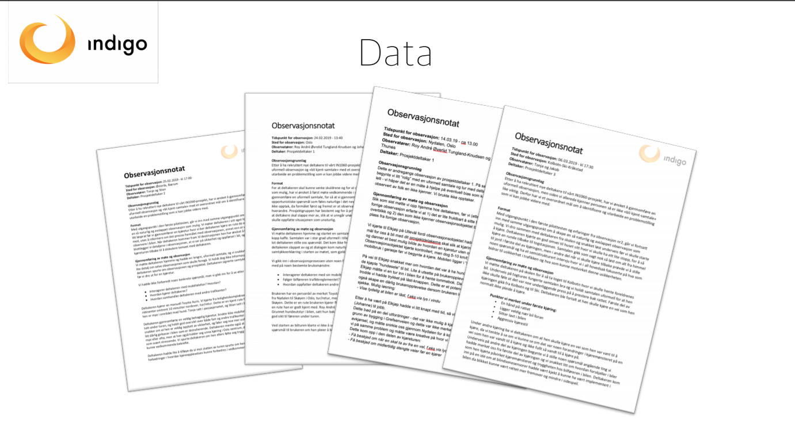
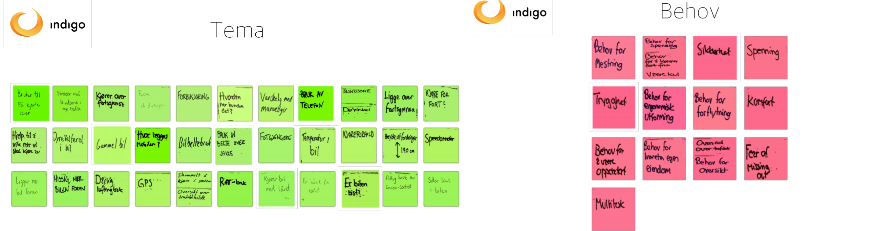
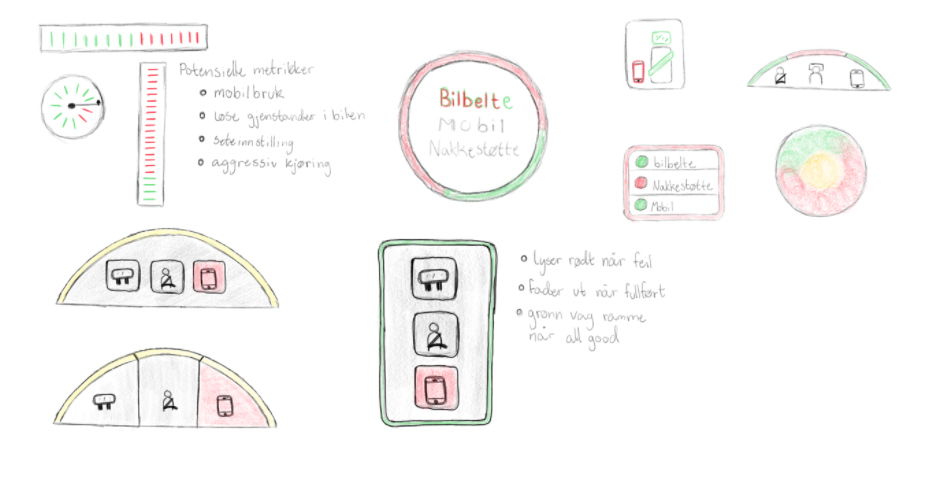

Indigo er navnet på gruppen som prøvde å løse problemstillingen «Hvordan motivere unge sjåfører til å følge sikkerhetstiltak som øker passiv sikkerhet under kjøring». Målet vårt var å utforske kjøreatferden til yngre sjåfører og benytte denne dataen til å skape en løsning som kan bidra til å redusere risikoen og skadevirkningene ved en trafikkulykke. Denne løsningen ble en høyoppløselig prototype kodet med Arduino. Jeg hadde en gjennomgående rolle i hele prosjektet, hvor jeg var inkludert i alle faser.
Interaksjonsdesign: Datainnsamling, Brukerevaluering, Fokusgruppe, Intervju, Observasjon
Utvikling: Arduino
Gjennom hele prosjektet jobbet vi i iterasjoner hvor målet alltid var å tilfredsstille brukerens behov, derfor er alle designvalg også gjort på bakgrunn av det brukerne selv mente.
 Gjennom analyse av den innledende datainnsamlingen fant vi ut at brukerne selv hadde et behov for trygghet, som ble en fellesnevner vi gikk videre med. Vi startet prototypingen. Det ble imidlertid en diskusjon om det brukeren ønsket faktisk var deres behov. Gjennom videre datainnsamling i form av intervjuer og fokusgruppe klarte vi å kartlegge forskjellen på hva brukeren ønsket og hva de trengte for å få en mer sikker kjøreopplevelse.
Bildet over viser noen av de første prototypene vi lagde. De to nederst til venstre ble utformet etter evalueringen.Første evaluering med brukerne ga oss tilbakemeldingen på at de helst ville ha noe som ikke lagde lyd og ikke sto «i veien» for dem. Hvordan skulle vi da lage en løsning som gjorde at sjåførene ble tryggere? På denne måten klarte vi å skille deres ønsker og deres behov og innså at dette var to forskjellige ting.
«Trygghetsmåleren» er den ferdige prototypen, konstruert med Arduino og 3D printer.